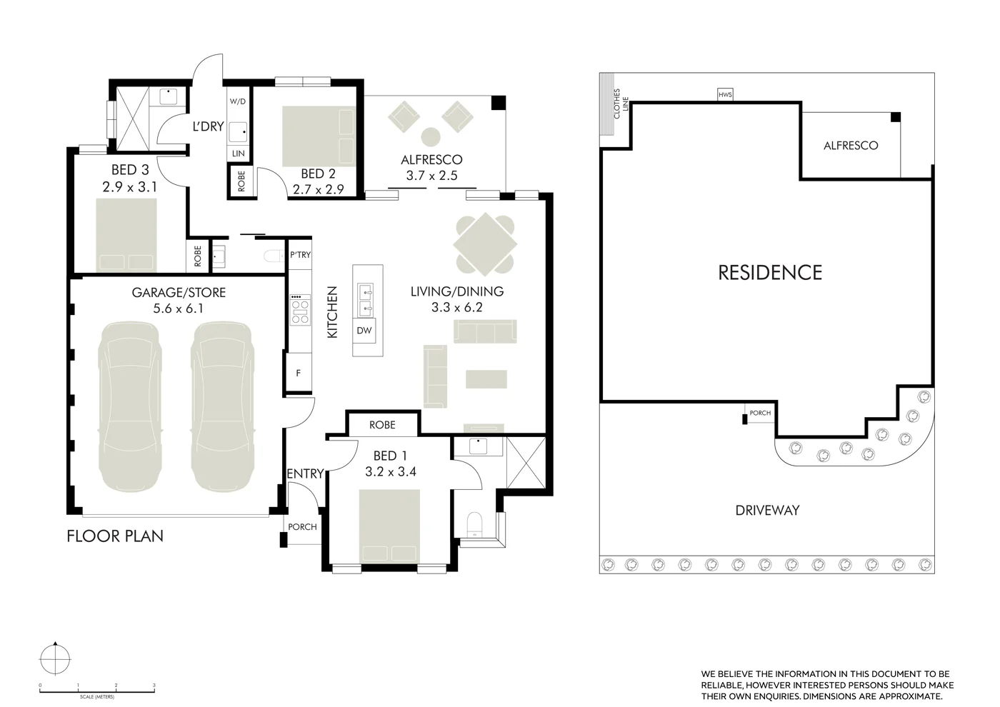
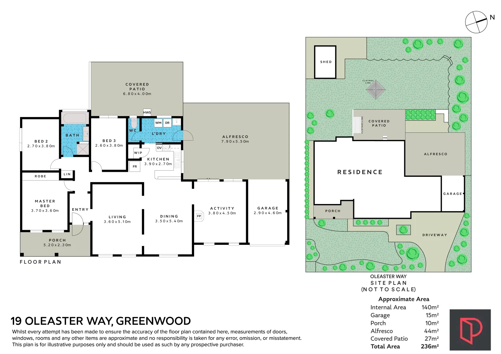

Guide for Perth agents and sellers
2D vs 3D Floor Plans
What each one tells a buyer, when a 3D plan earns its place on a listing, and what to check on areas, site plans and cost before you order.
Every listing needs a 2D floor plan. It is the flat, dimensioned drawing buyers use to check room sizes, see where the bedrooms sit against the living areas and compare one home with another. A 3D floor plan is an add-on, not a replacement: it helps buyers picture a space they can’t easily read from photos, which makes it worth the money on off-the-plan stock, empty homes, apartments and unusual layouts. On a typical furnished family home with good photos, the 2D plan does the job.
What a 2D floor plan is
A 2D floor plan is a top-down drawing of the home: walls, doors, windows, room names and dimensions, usually with an overall area. It is the closest thing a listing has to a reference document. Buyers zoom in on their phone, screenshot it and print it for the inspection.
Clean black and white is the standard because it reads at any size, on a portal, brochure or window card.

What a 3D floor plan is
A 3D floor plan takes the same layout and renders it from an angle, with walls given height, floor finishes shown and, in most cases, furniture placed in each room. It is a presentation image. It shows how rooms connect and how they furnish, but usually drops the dimensions that make a 2D plan useful.
Finishes shown should match the home or be clearly marked as illustrative — a 3D plan is not a spec sheet.
Side by side
| 2D floor plan | 3D floor plan | |
|---|---|---|
| What it shows | Flat top-down layout, room names, dimensions | Angled view with walls, finishes and usually furniture |
| What buyers use it for | Checking room sizes, flow and bedroom placement; comparing listings | Picturing the space and how it would furnish |
| Dimensions and area | Yes — the reference document | Usually not, or only room names |
| Print and window cards | Prints cleanly in black and white | Colour image; less legible small |
| Best for | Every listing | Off-the-plan, empty homes, apartments, unusual layouts |
| Baker price (inc. GST) | From $159 by internal area | $60 add-on |
| Baker turnaround | Next day | Ask when booking |
Baker prices from the pricing page, last checked 22 October 2026.
What buyers actually use a floor plan for
Photos sell the feeling; the plan answers whether the home works. Is the main bedroom away from the kids’ rooms? Is there a second living area? Those questions decide whether someone books an inspection.
The best-known survey on this is old but direct. In 2013 the UK portal Rightmove reported that over a third of buyers it surveyed were less likely to enquire about a property without a floor plan, and one in five would ignore the listing completely. That is UK data from a portal’s own survey, so treat it as a signal rather than a Perth benchmark.
On realestate.com.au and Domain, the floor plan is uploaded with the listing media through your listing software. On realestate.com.au’s Premiere+ listings, REA Group’s “Tour the Property” view (launched October 2024) presents images, videos and floor plans together in one swipeable format, so the plan sits in the same flow as the photos.
When 3D is worth it
- Off-the-plan and new builds. There is nothing to photograph yet. A 3D plan from the builder’s drawing is often the only way to show the layout in a form buyers can read.
- Empty homes. Bare rooms photograph smaller than they are. A furnished 3D plan shows scale. Virtual staging does the same job inside the photos.
- Apartments. Buyers want to know whether a dining table fits and how the living opens to the balcony. 3D answers that faster than dimensions.
- Unusual or split-level layouts. Where the 2D drawing is hard to read, 3D shows how the spaces stack and connect.
- Large prestige homes. More rooms means more for buyers to piece together. A 3D plan works alongside a 3D virtual tour, which lets them walk the home themselves.
Where it isn’t worth it: a furnished three-by-two with clear photos and a simple layout. That budget goes further on drone or video.
Site plans: the block, not the house
A floor plan shows the inside. A site plan shows the house on the block — boundaries, setbacks, driveway, pool, sheds and outdoor living. On large blocks, corners, battleaxe lots and anything with subdivision or granny-flat potential, the block is part of the sale and a site plan earns its place. On a strata apartment it adds little.

Measurements, areas and disclaimers
Statements made about a property for sale must be true and accurate — WA’s Commissioner for Consumer Protection has said exactly that in a prosecution under the Australian Consumer Law. Floor plans and the areas printed on them are part of the advertising.
Three things keep a plan honest:
- Measure the house as it stands. Perth stock is often extended or re-walled after the original drawing, so a traced builder’s plan can be wrong before it is published.
- State what the area includes. Internal living only, or with garage, alfresco and balcony? Label it.
- Carry a disclaimer that matches. Marketing plans are a guide. The disclaimer should say so, and buyers should rely on their own inspection and the contract documents.
Cost and turnaround with Baker
Baker floor plans are measured on site during the shoot and delivered the next day. 2D plans are priced by internal area: $159 up to 140 m², $199 for 140–270 m², $219 for 270–370 m² and $219 plus $1 per m² above 370 m². A clean redraw of an existing plan with a site plan and dimensions is $45. A 3D floor plan is a $60 add-on to a floor plan order, or produced from a supplied builder’s plan. All prices include GST.
Not sure 3D will help a particular listing? Ask when you book. Full detail on the floor plans page, or see how plans fit into a shoot on the photography page.
2D vs 3D floor plans — common questions
Sources
- Rightmove — Maximise the chances of finding a buyer with a floorplan (June 2013)
- Real Estate Business / REA Group — The listing of the future is here
- Consumer Protection WA — Order to pay $7,500 after false aircon claims about home for sale
General information only, current as at 19 October 2026 — not legal advice.
Get the plan drawn on shoot day.
Measured on site, delivered next day, from $159 — add a 3D plan for $60.